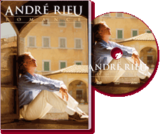

|
Romance (2007) - 90 Minutes
|
 |
|
Romantic memories In one of his greatest specials
we meet André Rieu as a romantic par excellence. In ‘Romance’ he
takes his viewers to see the most beautiful spots he has ever
played in, each more romantic than the last: Vienna, Venice,
Paris, Tuscany and of course Limburg, the beautiful area of
André’s birth in the Netherlands. We see the most moving moments
from his musical career and we witness how touched André is when
he comes home after years of concert tours to find a rapturous
welcome in his own country. Together with his Johann Strauss
Orchestra and the sopranos Suzan Erens, Carla Maffioletti and
Carmen Monarcha, André Rieu plays sensitive melodies such as the
Lagoon Waltz, My heart will go on, Sous le ciel de Paris, The
last rose, Du sollst der Kaiser meiner Seele sein and the
world-famous Serenade by Toselli. ‘Romance’ from André Rieu
stands for pure enjoyment, romance at the highest level! |
Where to buy?
-
The Warehouse - NONE
-
Mighty Ape - NONE
-
The CD & DVD Store (Marbecks) - $34.99
|
|
DVD Tracklist
- The Godfather Waltz
- Romance Anonyme
- Lagune Waltz
- O Mio Babbino Caro
- The Rose
- Italiana
- You Are The Emperor Of My Heart
- Sous Le Ciel De Paris
- Roses From The South
- My Heart Will Go On
- Intermezzo Sinfonico
- Moonlight (Kojo No Tsuki)
- The Last Rose
- Limburg Anthem
- Concierto De Aranjuez
- Swinging Bells Of Limburg
- Nightingale Serenade
- Auld Lang Syne
- Ode To Maastricht
- Lullaby
|
|